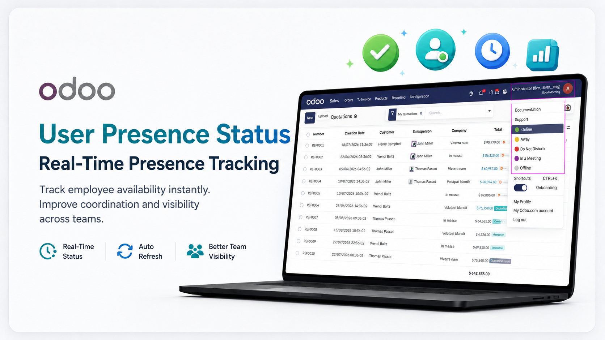
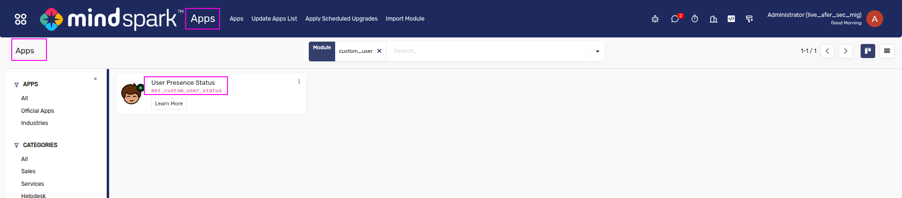
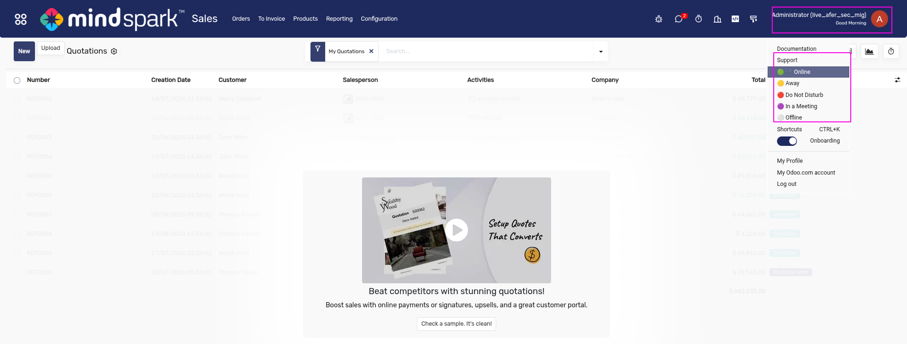
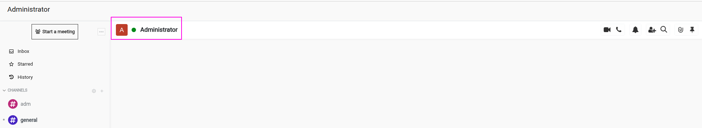
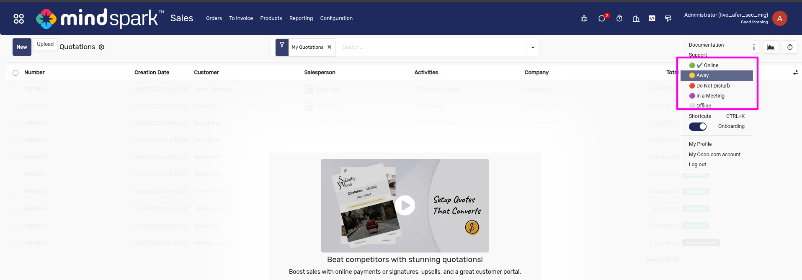
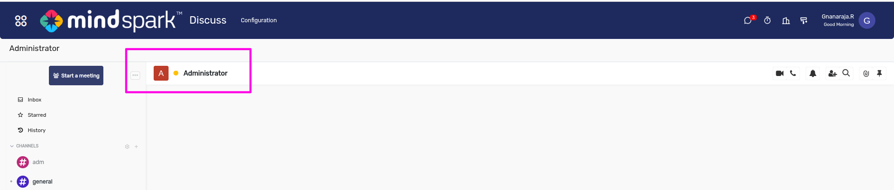

User Presence Status
User Presence Status helps Odoo users manage their availability directly from the profile dropdown.
Users can switch between Online, Away, Do Not Disturb, In a Meeting, and Offline. The selected status is displayed in the user profile and Discuss screen, helping teams communicate better and avoid unnecessary interruptions.

Module Installation / Apps
This screen shows the **User Presence Status** module installed in the Odoo Apps menu.
The module adds a simple and practical availability status feature for users, allowing employees to manage and display their current working status directly from their profile.
It helps teams quickly understand whether a user is available, away, busy, in a meeting, or offline.
User Profile Dropdown Status Menu
This screen highlights the user profile dropdown where the availability status options are displayed. Users can quickly change their status from the top-right profile menu without opening any separate configuration screen.
The available statuses include **Online, Away, Do Not Disturb, In a Meeting, and Offline**, making internal communication easier and more transparent.


User Status Indicator
This screen shows the selected user presence status reflected in the **Discuss** module.
A colored status indicator appears near the user name, helping other team members identify the user’s current availability before starting a chat, call, or meeting.
This improves communication clarity and avoids unnecessary interruptions.
Status Selection Change
This screen shows how a user can update their current availability status from the profile menu. When the user selects **Away**, the status is immediately updated and shown with the corresponding color indicator.
This allows users to inform colleagues when they are temporarily unavailable or away from active work.


Updated Status in Discuss
This screen confirms that the selected status is synchronized with the Discuss user profile. After choosing **Away**, the user’s status indicator changes accordingly in the communication panel.
This ensures that team members can see real-time availability information while collaborating inside Odoo.
Odoo Compatibility & Support
Fully compatible with Odoo 18 Community & Enterprise Editions. Support for other Odoo versions is also available based on your business requirements.
What Makes Us The Best Choice
APPS
Custom Odoo apps for smarter workflows.
CLIENTS
Trusted by businesses worldwide.
PRODUCTS
Ready-to-use, high-quality modules.
PROJECTS
Delivered with precision and expertise.